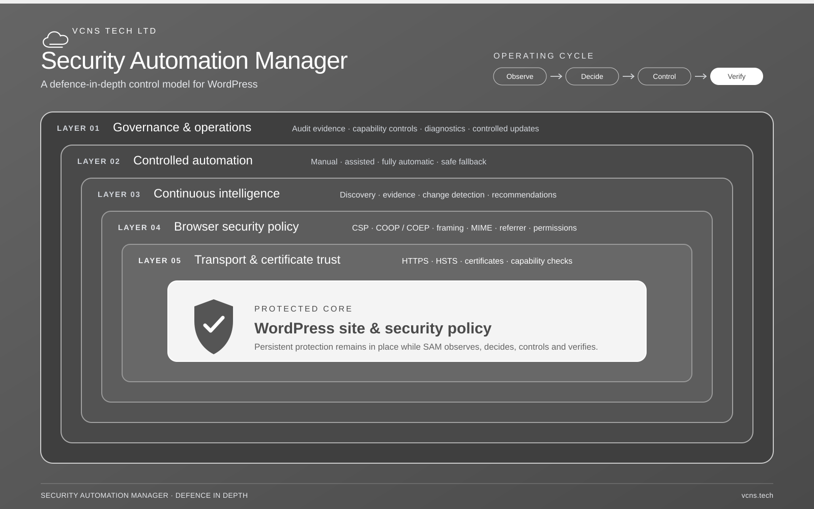
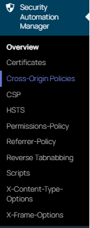

Content Security Policy
The full workflow this help site mostly covers: report-only rollout, source discovery, risk-ranked approvals, and staged enforcement.
Security Automation Manager
This help site explains what the plugin does, how to roll out Content Security Policy safely, how to read the dashboard, how to decide which CSP changes should be approved, and how to configure the nine simpler per-surface header pillars alongside it.
Start here
A Content Security Policy is the browser's own defence against cross-site scripting (XSS) -- the attack where a compromised plugin, a malicious ad, or an injected comment gets its own JavaScript to run on your site as if it were yours. A strict policy stops that script from running even after it's already on the page, which is why CSP is considered one of the most effective defences available, and also why deploying it badly is so easy: get the policy wrong and it's your own site's scripts, fonts, and payment forms that stop working, not the attacker's.
Security Automation Manager helps a WordPress administrator introduce a stricter Content Security Policy without immediately blocking live site resources. It does this by keeping each site surface in report-only mode first, collecting browser violation reports, discovering external sources, and turning those observations into reviewable policy proposals.
The plugin is not a one-click security switch. It is a controlled workflow. The administrator still decides which third-party hosts, scripts, frames, fonts, images, connections, and forms are legitimate for the site.

The transport/certificate trust layer is TLS certificate automation via ACME (Let's Encrypt) -- request, validate, and renew entirely from inside WordPress, no shell access or certbot required. See TLS certificates in the user guide.
Use it on staging first. Run a scan, browse representative pages, review For Review, and keep report-only enabled until the violations table is quiet.
Enforce mode can block scripts, styles, frames, fonts, media, and API calls. Move one surface at a time only after the dashboard evidence supports the change.
Pillars
Configuration, reporting, and the decision engine are shared plumbing. Content Security Policy is the most capable pillar built on top of it; the other nine are simpler per-surface toggles with no learning curve of their own.
The full workflow this help site mostly covers: report-only rollout, source discovery, risk-ranked approvals, and staged enforcement.
Per surface, choose DENY or SAMEORIGIN to stop the site being framed by another origin -- closing off clickjacking, where a hidden iframe of your site is stacked under a decoy page so a visitor's real click lands on your button instead. A fallback for browsers that don't honour CSP's frame-ancestors directive.
Per surface, on or off. When on, sends nosniff so browsers stop guessing content types away from what the server declared -- closing a path attackers use to get a file executed as script when it was never meant to be.
Per surface, choose from the eight standard tokens. Controls how much of this site's URL is sent as the Referer header when a visitor follows a link away from it, so a password-reset link or a session token sitting in the query string doesn't leak to whatever site they land on next.
Per surface, per browser feature (camera, geolocation, and similar). Choose None, Self, or All for each one covered, so an embedded ad or third-party widget can't quietly ask a visitor's browser for their camera or location.
Per surface, choose a Max-Age, whether to include subdomains, and whether to opt into browser preload lists. Only ever sent over HTTPS requests -- once set, it forces the browser straight to HTTPS on every future visit, closing the window an attacker on the same network has to intercept a visitor's very first plain-HTTP request.
Per surface, choose Same-Site, Same-Origin, or Cross-Origin. Controls which other sites may load this site's own resources, so another site can't quietly pull your images or data into a page you don't control.
Per surface, choose Unsafe-None, Same-Origin, or Same-Origin-Allow-Popups. Isolates this site's browsing context from cross-origin windows, closing a side-channel a malicious tab opened from your site could otherwise use to snoop on it.
Per surface, choose Unsafe-None, Require-Corp, or Credentialless. Blocks cross-origin subresources that don't explicitly opt in, working alongside Cross-Origin-Opener-Policy to seal off that same side-channel.
Per surface, choose None, Master-Only, By-Content-Type, or All. A legacy Flash/Acrobat-era header; None is almost always correct.
Seven of them -- X-Frame-Options, X-Content-Type-Options, Referrer-Policy, Permissions-Policy, Strict-Transport-Security, Cross-Origin-Resource-Policy, and X-Permitted-Cross-Domain-Policies -- have no report-only mode, discovery workflow, or automation: each header is either sent exactly as configured, or not sent at all, and takes effect immediately with nothing to learn beyond the value itself. Cross-Origin-Opener-Policy and Cross-Origin-Embedder-Policy have their own narrower report-only mode (still no discovery workflow or automation) -- see the user guide for details. Strict-Transport-Security is the one exception worth a second look: browsers cache its Max-Age, so a change doesn't undo itself the moment you revert the setting.
Content rewrite protections
Reverse Tabnabbing, External Scripts, and Internal Script Integrity aren't header pillars -- they act on the page or its assets directly, all free, all fail-open on any uncertainty.
Adds rel="noopener" to target="_blank" links missing it, closing a window.opener phishing gap. Purely additive -- never breaks a link.
Inventories third-party script/stylesheet origins from real page loads, lets you classify each one, and supports Subresource Integrity -- report-only by default, matching CSP's own philosophy.
Adds Subresource Integrity to your own theme/plugin/core scripts and stylesheets automatically, per-surface opt-in. Reads the local file directly -- never a network fetch -- so there's nothing to classify or approve.
Full details, including why SRI hashes are never fetched or fabricated, are in the user guide.
How it works
Requests are treated as frontend, admin, login, or API. Each surface has its own policy profile and its own mode.
The plugin builds a CSP header from strict defaults, approved hosts, approved inline hashes, and a per-request nonce.
Static scans find many external assets. Browser violation reports identify runtime activity that static HTML cannot reliably reveal.
Discovered sources are proposed as pending changes. They are not included in the live policy until an administrator approves them.
Approvals, automatic low-risk approvals, rejections, reversions, and undo actions are recorded in the policy change ledger. Rejected or reverted fingerprints suppress repeated automatic proposals until a later approval or undo clears suppression.
The promotion gate blocks enforce mode until the surface has approved inventory and no recent violation activity inside the configured window.
Steps 3 to 6 are CSP-specific. Seven of the other nine pillars only do step 1 (initialise) and step 2 (emit), with no evidence, approval, or promotion step. Cross-Origin-Opener-Policy and Cross-Origin-Embedder-Policy add a narrower evidence step of their own (their own Report-Only mode), but still skip approval and promotion.
Learning curve
Learn what a surface, directive, source, nonce, report-only policy, enforce policy, and violation report mean.
Use Profiles for mode, For Review for pending hosts, Policy Changes for the activity timeline, Violations for browser evidence, and Scan Log for crawl history.
Approve only sources with a clear business or functional purpose. Treat script, connection, frame, form, and worker changes as higher risk.
Browse real user journeys while report-only is active. Checkout, login, forms, embedded media, maps, analytics, consent tools, and page builders often reveal missing sources.
Enforce the lowest-risk surface first, monitor violations after the change, and keep a rollback path to report-only.
Rollout plan
| Phase | Action | Evidence to collect | Move on when |
|---|---|---|---|
| Prepare | Install on staging and confirm requirements. | Plugin activates, dashboard opens, no competing CSP header is reported. | The site still renders normally. |
| Scan | Run a manual scan from the dashboard. | For Review contains expected external hosts. | Obvious required sources have been reviewed. |
| Exercise | Browse real user journeys in report-only mode. | Violations table shows blocked runtime activity without breaking the site. | Required runtime sources are understood. |
| Approve | Approve narrow legitimate sources; reject unknown or unwanted sources. | Policy Changes ledger contains required decision reasons. | Inventory is stable and recent violations are resolved. |
| Enforce | Promote one surface to enforce mode. | No user-facing breakage and no fresh unresolved violations. | The surface remains stable through normal use. |
| Maintain | Repeat after theme, plugin, content, or integration changes. | New proposals and reports are reviewed before further enforcement changes. | The policy remains explainable and auditable. |
Dashboard
Open Security Automation Manager in the WordPress admin. The top-level Overview page shows every pillar's per-surface status at a glance, with a link into each one. For CSP specifically, go to Security Automation Manager -> CSP -- that dashboard is split into tabs that match the product workflow.
Use Run Manual Scan after installing the plugin, changing a theme, adding a plugin, altering a checkout flow, or adding third-party content.
The plugin schedules a daily scan. Notification email is used when a scheduled scan detects a policy change.
Use Security Automation Manager -> CSP -> Settings -> Deterministic Automation to change a surface's automation mode and set a per-run automatic-change limit.

Approval decisions
Approve a source when it is required, expected, narrow, and explainable. Examples include the payment provider used by checkout, the font CDN used by the theme, or the analytics host already approved by the site owner.
Investigate if the source appears only once, has no clear owner, is high risk, or relates to script, connection, form, frame, or worker behaviour. Ask which plugin, theme, or business process requires it.
Reject unknown or unnecessary proposals. Revert a previously approved source when it is no longer required. Undo an approval or rejection when the administrator decision itself was mistaken. Rejections and reversions suppress the same fingerprint from being proposed again automatically.
WordPress.org build
The submitted plugin package provides every pillar, the report-only workflow, scanning, dashboard, violation endpoint, multi-surface scanning, strict-dynamic, Trusted Types support, policy history, and review surfaces locally -- it does not contact third-party services for plugin updates, telemetry, or remote product configuration.
The one exception is Fully Automatic CSP mode: it requires an active subscription (£1.99/month or £19.99/year), and the in-admin Upgrade button starts a checkout flow with an external service where that's available in your build. Everything else described on this site works without payment or remote entitlement checks. See Automation tiers in the user guide.
New CSP sources remain pending until an administrator approves them, and CSP always starts report-only on every surface. Enforcement is never automatic -- it always requires a deliberate administrator promotion.
Help library
Full guide for installation, configuration, scanning, source approvals, enforcement, maintenance, and troubleshooting.
Read the user guideDirect answers for rollout, compatibility, report-only behaviour, privacy, and recovery.
Open the FAQMaintainer-level notes on runtime flow, trust boundaries, and component responsibilities.
Read architecture notesWhere to report suspected vulnerabilities without disclosing them in public issues.
Read security policyFAQ preview
No. Report-only mode asks the browser to report would-be violations. It does not block the resource. This is the safest way to learn what a live WordPress site actually needs.
Yes. Enforce mode can block required resources. Use it only after reviewing violations and approving required sources.
No. Approve only sources that are necessary, known, and narrow. Reject or investigate anything unknown.